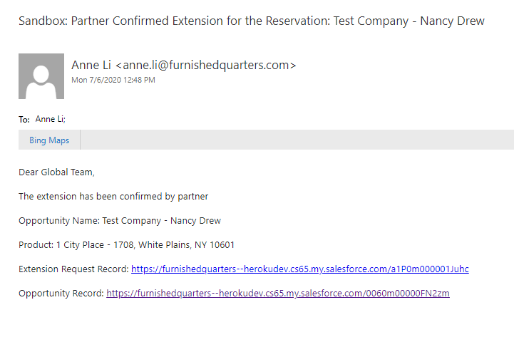

Tech Guide
Routes
./config/routes.rb
# Notice Routes
# departure routes
get "/notices/confirm-departure", to: "notices#confirmdeparture"
post "/notices/submitconfirmation", to: "notices#submitconfirmation"
get "/notices/departure-confirmed", to: "notices#departureconfirmed"
get "/notices/departure-confirmation-error", to: "notices#departureerror"
get "/notices/partner-confirm-departure", to: "notices#partnerconfirmdeparture"
post "/notices/partner-confirms-departure", to: "notices#partner_confirms_departure"
# extension routes
get "/notices/extend", to: "notices#extend"
post "/notices/submitextension", to: "notices#submitextension"
get "/notices/extension-confirmed", to: "notices#extensionconfirmed"
get "/notices/extension-error", to: "notices#extensionerror"
get "/notices/partner-confirm-extension", to: "notices#partnerconfirmextension"
post "/notices/partner-confirms-extension", to: "notices#partner_confirms_extension"
get "/notices/confirmation-success", to: "notices#confirmationsuccess"
get "/notices/already-confirmed", to: "notices#alreadyconfirmed"
get "/notices/fq-confirmation-partner", to: "notices#fqconfirmationpartner"
Handling Invalid Url
- Redirects to
/notices/404page ifresidorextidis missing or invalid - See
notices_controller#is_valid_idhelper method for validation details

Global Notice Process
- Guest receives NTV email and confirms departure
- Clicking on
Confirm Departurelink will redirect them to/notices/confirm-departurepath

./app/controllers/notices_controller.rb
class NoticesController < ApplicationController
def confirmdeparture
if is_valid_id(params[:resid]) == false
redirect_to "/notices/404"
return
end
@departure = salesforce.query("
SELECT Id, Notice_Due__c, RecordTypeId, Departure_Confirmed__c, Departure_Date__c
FROM Opportunity
WHERE Id = '"+params[:resid]+"'"
)
if @departure.first.nil?
redirect_to "/notices/404"
return
end
@departure.each do |item|
if item.Departure_Confirmed__c == true
redirect_to handle_path(notices_departure_confirmation_error_path, item.RecordTypeId)
end
end
end
end
- Renders
./app/views/notices/confirmdeparture.html.erbtemplate - Checks if query string params are valid
- Checks if departure is already confirmed
- If record is found, guest will be redirected to
Already Confirmedpage - When guest submits form, POST request is made to
/notices/submitconfirmationroute
./app/controllers/notices_controller.rb
class NoticesController < ApplicationController
# ...
def submitconfirmation
# ...
# ...
if params[:recordtypeid] == '012300000000Y6vAAE'
@confirmdeparture = salesforce.update('Opportunity',
Id: params[:res],
Notice_Contact_Partner_By__c: Time.now.to_date,
Provider_Notice_Given__c: true,
Departure_Confirmed_By__c: confirmed_by(params[:fullname]),
Notice_Status__c: "Notice",
ntv_notice__c: 1,
Departure_Confirmed__c: 1
)
else
# ...
end
if @confirmdeparture
# Display the success page
redirect_to notices_departure_confirmed_path
else
# If the reservation was already confirmed, display the error page
redirect_to handle_path(notices_departure_submission_error_path, params[:recordtypeid])
end
end
end
end
- If the reservation's
RecordTypeIdisOOM - Out of Marketthe above fields will be updated on Salesforce - Guest is redirected to
/notices/departure-confirmedpath after departure is confirmed - If guest tries to refresh the page or re-submit the form, they will be redirected to
/notices/departure-confirmation-errorpath
An auto email will be sent to the reservation's Primary_Partner_Contact__c if the following conditions are met:
Partner_NTV_Confirmed__cis false (checkbox is unchecked)Departure_Confirmed__cis true (checkbox is checked)Partner_Type__cpicklist is either:- Corporate Housing
- Hotel
- Property Direct Furnished

- Workflow Rule - NTV Provider Notice Confirmed
- Email Template - Provider Notice Confirmed
Partner will recieve and email which redirects them to /notices/partner-confirm-departure path
./app/controllers/notices_controller.rb
class NoticesController < ApplicationController
# ...
def partner_confirms_departure
# ...
if params[:ntvconfirmed] == "true" || @reservation.first.Partner_NTV_Confirmed__c == true
# ...
else
if params[:recordtypeid] == '012300000000Y6vAAE' # of record type OOM
@confirmation = salesforce.update('Opportunity',
Id: params[:res],
Partner_NTV_Confirmed__c: true,
Partner_NTV_Confirmed_By__c: confirmed_by(params[:fullname])
)
end
if @confirmation
redirect_to handle_path(notices_confirmation_success_path, params[:recordtypeid])
else
redirect_to handle_path(notices_already_confirmed_path, params[:recordtypeid])
end
end
end
end
- When partner submits form, a POST request is made to
/notices/partner-confirm-departureroute - The above fields are updated on the Reservation record
- Partner is redirected to
/notices/confirmation-successpath - If partner refreshes the page or tries to re-submit the form they will be redirected to
/notices/already-confirmedpath
When Partner_NTV_Confirmed__c is set to true it will trigger a workflow and sends Global Leasing team an email notifying partner has confirmed guest's departure
- Workflow Rule: NTV Partner - Departure Confirmation
- Email Template: OOM Departure Confirmed - Partner
Global Extension Process
Guest receives NTV email and requests for extension

- GET request is made to
/notices/extendpath - When guest submits form a POST request is made to
/notices/submitextensionpath
./app/controllers/notices_controller.rb
# ...
def submitextension
# ...
if extension && extension.empty? == false
# ...
elsif reservation.Departure_Confirmed__c == true
# ...
elsif params[:monthtomonth] == " true "
# check if month-to-month is true, meaning an extension may be submitted
extension_params = {
Opportunity__c: params[:res],
Request__c: params[:fullname] + " requested an extension date of " +
format_date(params[:extensiondate]),
Start_Date__c: params[:departuredate].to_date,
End_Date__c: params[:extensiondate].to_date,
Primary_Partner_Contact__c: params[:primarypartnerid]
}
# @addnote will be false in the case that extension request was not created.
# In this case forward to an error page
@addnote = salesforce.create('Extension_Request__c', extension_params)
if @addnote
redirect_to notices_extension_confirmed_path
else
redirect_to handle_path(notices_extension_submission_error_path, reservation.RecordTypeId)
end
else
redirect_to handle_path(notices_extension_departure_confirmed_path, reservation.RecordTypeId)
end
end
- A new
Extension_Request__crecord is created on salesforce, with the above fields updated - Guest will be redirected to
/notices/extension-confirmedpath - If guest already submitted an extension and tries to re-submit it will redirect guest to
/notices/extension-errorpath - If guest refreshes the page or clicks on
I Wish to Extendbutton from NTV email, it will also redirect guest to/notices/extension-errorpath - Note: the contact email is determined from query string of
oom=trueusingglobalnotices@furnishedquarters.comfor OOM record types.- Check out the
notices_controller#handle_pathhelper method for more details
- Check out the
As soon as a new Extension_Request__c record is created a workflow rule is triggered and an an auto email is sent to Partner
- Workflow Rule - OOM Lease Extension - Partner
- Email template - OOM Lease Extension - Partner


-
Partner can choose from dropdown menu of options to confirm if extension is available
- Default is set to
Extension Available, Same Rate - If partner chooses either option with
Rate Changeand/orDifferent Date- A required input field(s) will appear to capture the new rate and/or new date
- Default is set to
-
A POST request is made to
/notices/partner-confirms-extensionroute when partner submits form
./app/controllers/notices_controller.rb
# ...
def partner_confirms_extension
# ...
if #
# checks if url params are valid
elsif # ...
# checks if extension is already confirmed
else
extension_params = {
Id: params[:extid],
Partner_Extension_Option__c: params[:extension],
Partner_Extension_Confirmed_By__c: confirmed_by(params[:fullname]),
Is_Available__c: 'Yes',
Rate_Change__c: 'No',
Partner_Confirmed_End_Date__c: @extension.End_Date__c
}
if params[:extension] == "Extension Available, Same Rate"
@request = salesforce.update('Extension_Request__c', extension_params)
elsif params[:extension] == "Extension Available, Rate Change"
extension_params[:Rate_Change__c] = 'Yes'
extension_params[:Partner_Confirmed_New_Rate__c] = params[:newrate].to_f
@request = salesforce.update('Extension_Request__c', extension_params)
elsif params[:extension] == "Extension Available, Different Date"
# date must be formated as yyyy-mm-dd to save to salesforce
extension_params[:Partner_Confirmed_End_Date__c] = format_date_sf(params[:newdate])
@request = salesforce.update('Extension_Request__c', extension_params)
elsif params[:extension] == "Extension Available, Rate Change, Different Date"
extension_params[:Rate_Change__c] = 'Yes'
extension_params[:Partner_Confirmed_New_Rate__c] = params[:newrate].to_f
extension_params[:Partner_Confirmed_End_Date__c] = format_date_sf(params[:newdate])
@request = salesforce.update('Extension_Request__c', extension_params)
elsif params[:extension] == "Extension Not Available"
extension_params[:Is_Available__c] = 'No'
extension_params[:Rate_Change__c] = nil
extension_params[:Partner_Confirmed_End_Date__c] = nil
@request = salesforce.update('Extension_Request__c', extension_params)
end
redirect_to handle_path(notices_confirmation_success_path, @extension.Opportunity__r.RecordTypeId)
end
end
- The Extension Request record fields will be updated depending on which option Partner chooses
- Partner will be redirected to
/notices/confirmation-successpath after confirming extension availability - If partner tries to refresh the page or re-submit the form, they will be redirected to
/notices/already-confirmedpath
Once Partner_Extension_Confirmed_By__c field is captured, a workflow will be triggered and an auto email will be sent to Global Leasing team to either accept or reject partner terms
- Workflow Rule - OOM Partner Confirmed Extension
- Email Template - OOM Partner Confirmed Extension

If Partner terms are accepted, the FQ_Accepts_Partner_Terms__c checkbox is checked off in Salesforce and an auto email is sent to partner displaying the details of extension request
- Workflow Rule - OOM FQ Approved Extension
- Email Template - OOM FQ Approved Extension
- Partner is redirected to
/notices/fq-confirmation-partnerroute